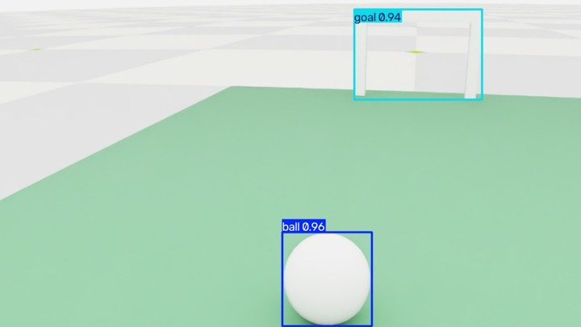

SELF-PACED WORKSHOP
Seeing the football
Combine detections, range measurements, and body attitude into information navigation can use.
Three complementary sources
| Source | Information | Limit |
|---|---|---|
| RGB | Image target location | No direct absolute range |
| ToF | 64 forward range zones | Invalid zones are not free space |
| Body IMU | Attitude and angular velocity | Does not locate the ball or goal |
The RGB detector finds image regions resembling a ball. ToF measures ranges across an 8 × 8 forward-facing grid; it is not a 360-degree lidar. A body IMU estimates attitude so image rays and ranges can be interpreted in the right frame. No single sensor supplies the complete world state.
The Beta simulation uses GC2093 camera and VL53L8CX ToF profiles. Images are processed at 960 × 540 and 15 Hz. Lens field of view and noise settings are simulation assumptions; physical devices require calibration.
Run the fixed detector first

python3 scripts/workshop.py detect \
--model models/detector.pt \
--source datasets/sample/images \
--output outputs/detection-01Expected result: images with ball and goal detections. Inspect small targets, image boundaries, and occlusion. Confidence is a model score, not a guarantee that a detection is correct.
- 1RGB image
- 2Detection box
- 3Image ray
- 4Range and ground constraints
- 5Target in the body frame
Practice training a detector
python3 scripts/workshop.py train-detector \
--data datasets/sample/data.yaml \
--epochs 5 \
--batch 8 \
--seed 303 \
--output outputs/student-detector-01The small dataset and five epochs introduce data, labels, training, and validation; this is not a full training recipe. Inspect loss curves and validation images. To improve quality, diversify scenes and keep training, validation, and test scenes separate.
From a pixel to a spatial ray
Let a detection center be pixel (u, v), with camera focal lengths (fx, fy) and principal point (cx, cy). In a common camera convention, the viewing ray is proportional to ((u−cx)/fx, (v−cy)/fy, 1). This gives direction but cannot distinguish a small nearby object from a larger distant one. Range or a known geometric constraint is still needed.
Camera coordinates commonly use x right, y down, z forward. Here the body convention is x forward, y left, z up. Transform using the camera’s rotation and translation relative to the body rather than mixing same-named axes. Head motion changes this transform, so localization requires joint state at the appropriate time.
An 8 × 8 ToF grid does not provide 64 independent object labels. One cell may cover both floor and ball, and close reflections may be invalid. Check measurement status and range before associating a return with an image target. Treating an invalid reading as an obstacle-free direction gives navigation a false premise.
A past observation can become stale
After moving or tilting its head, the robot may lose the ball from view. Odometry can update a remembered relative position briefly, but error accumulates. Stale observations, invalid ranges, or lost ground constraints require stopping and reobserving. Missing data is not free space.
Check your understanding
If a ball box is accurate, can its center be used directly as a world coordinate?
Show explanation
No. Pixels give an image direction. Spatial position also requires a camera model, camera pose, and distance or geometric constraints.
Inspect labels and detections
The sample has 40 images split into 24 training, 8 validation, and 8 test images. Class 0 is the ball and class 1 the goal. Each YOLO label row is class cx cy width height, with the last four values normalized by image dimensions. A horizontal center of 0.5 means halfway across the image, not 0.5 meters in the world.
Choose one clear prediction and one difficult example. Check missed objects, false detections, and misplaced boxes, then compare object size and position. High confidence cannot repair camera calibration or turn a 2D box into depth. Navigation still requires range, attitude, timestamps, and validity checks.
Check your understanding
Can a ball label centered at (0.6, 0.4) be used directly as a navigation target at (0.6 m, 0.4 m)?
Show explanation
No. These are normalized image coordinates. A camera model and range or ground constraint are needed to obtain robot-relative position.